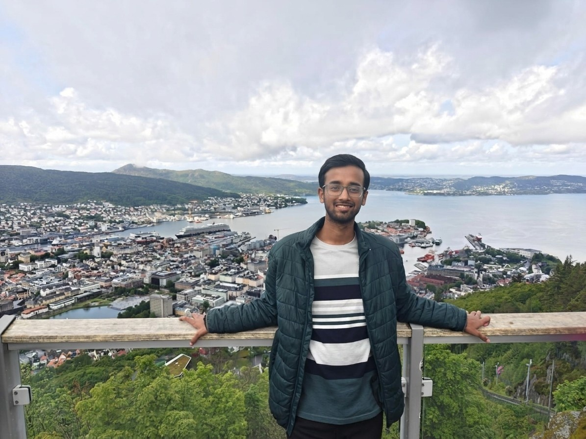

About
Fourth-year B.Tech student in Computer Science & Engineering at IIT Bombay. I work across machine learning, formal methods, and systems — from thinking in LLMs to weak-memory verification and trading algorithms.

Bio
Hello! I’m Malay. I’m currently doing my bachelor’s thesis on Thinking in LLMs with Prof. Preethi Jyothi, surveying causal roles of chain-of-thought reasoning and probing multimodal failure modes.
Last summer I was an Algorithm Development Intern at Hudson River Trading in Singapore, building deep-learning strategies on order-book data and fair-value models informed by global signals and news. Before that, I spent time at Uppsala University with Prof. Parosh Abdulla on rewriting semantics for weak memory models (paper in review).
Outside research and coursework, I mentor for the Astronomy Olympiad at HBCSE, TA for CSE courses, and volunteer with Krittika, IIT Bombay’s astronomy club. Feel free to reach out if you’d like to chat about ML systems, verification, or olympiad science.